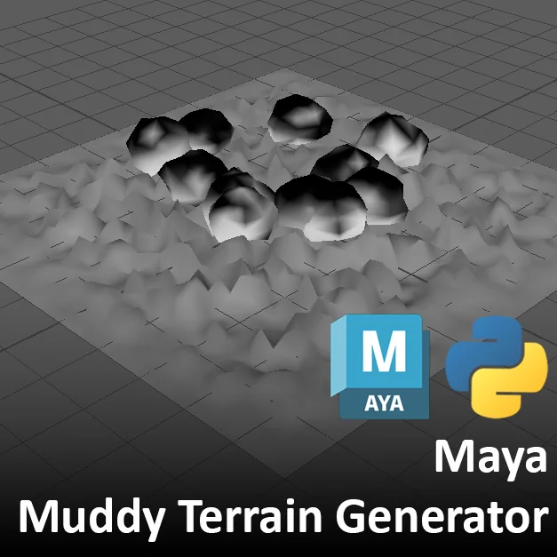

Goal
- A Maya Python script that procedurally generates mud terrain and computes distance-based mud contact masks on scattered objects.
Process
- Uses fBm noise to deform a subdivided grid into terrain shapes.
- Scatters rock objects onto the surface using closestPointOnMesh queries.
- Calculates a per-vertex mud influence mask based on each vertex proximity to the terrain. The mask is stored as vertex color and can drive shader blending.
Technical Details
- Uses Maya Python API 2.0, MFnMesh, and closestPointOnMesh.
- Pipeline: distance field to falloff curve to vertex color.